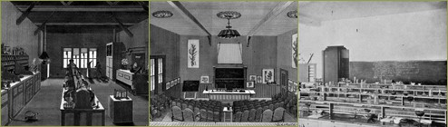
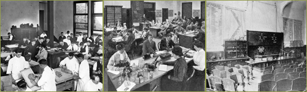

{% include nav.html %}
The disaster took a huge toll on the city's medical facilities—many of the city's hospitals were damaged or destroyed, including UC Medical Department’s dispensary clinic at Montgomery Street and the Park Central Emergency Hospital near Golden Gate Park. The injured were evacuated to the Presidio’s Post and General Hospitals in the far western portion of the city. The antiquated City and County Hospital, which had survived relatively undamaged, was quickly overloaded with patients. Within a week, over 100 refugee camps were set up throughout the city and more than 40,000 people took shelter in Golden Gate Park, where improvised outdoor hospitals served the sick and wounded, and outdoor kitchens were set up to feed the public. The Affiliated Colleges, located in what was once the far western section of the city at the end of the Masonic streetcar line, were now much closer to the center of the San Francisco population.
In just three cataclysmic days, San Francisco reverted to that sort of civic chaos reminiscent of the gold rush days of the nineteenth century. With the help of the U.S. Army, a self-appointed Citizen’s Committee of Fifty took on the task of managing the provision of sanitation, food, clothing and adequate shelter for the city’s newly destitute and homeless population. Some medical care was available in the semi-permanent camps, where supervised sanitation, outpatient medical care, and tent hospitals were arranged. In the midst of this emergency, University officials quickly began to assess damages to the Affiliated Colleges and moved to meet the immediate needs of the University and its public. Six days after the quake, the University academic council met and formally ended the academic year. Students were to be passed or failed without examinations and women students were encouraged to return to their homes outside of the disaster area.
Since it had consolidated its instruction in its building at Parnassus in 1899, the California College of Pharmacy suffered relatively minor damage, limited to cracked plaster, broken glassware, and ruined chemical supplies. Although instructional facilities had suffered little, the economic impact on the trustees and faculty was devastating, for hundreds of downtown drug stores were destroyed. Dean William Searby lost his flourishing Union Square Pharmacy and several other businesses, and he never fully recovered financially. Classes opened on time in autumn of 1906, and a faculty of eight professors, instructors and demonstrators taught courses in five laboratories. By this time Pharmacy’s intact facilities included four floors measuring fifty by 150 feet, a lecture hall designed for an audience of 200 persons, and a large Garden of Medicinal Plants, which was “available for special research work on active constituents.”
The sudden destruction of Dentistry’s entire clinical program in the earthquake and fire forced the faculty to consolidate its programs in the easternmost college building, which it shared with Pharmacy. Rooms that had housed spacious basic science labs and lecture rooms were refitted to make room for dentistry’s labs, furnaces, and infirmary facilities. On the ground floor the chemical, metallurgical, dental technic and prosthetic labs were relocated, along with lockers, lavatories and furnace rooms. The second floor was dedicated to the bacteriology and histological labs, and lockers for women students; the third contained lecture halls, a faculty room, and a museum and library. To serve the urgent dental needs of the San Francisco refugees, the entire first floor was remodeled to house clinic facilities, including surgical and extracting rooms. Making use of the planned adjacent facilities of the medical school, dental faculty performed “the more serious operations” in the new University Hospital adjoining the college building. Unfortunately, these massive changes compromised Pharmacy’s main lecture hall, an arrangement directly opposed by the Pharmacy faculty. In a revealing episode, President Wheeler stepped into the dispute and ruled that space would be made available for the needs of Dentistry.
>> Founding of the University of California Medical Center
1899–1918 Early Academic Programs and Teaching Hospitals
The 1906 Earthquake and Response
On April 18, 1906, in the early morning, a violent earthquake centered north of San Francisco on the San Andreas fault shook San Francisco, breaking the city's two major water mains and toppling brick buildings. With the city's water supply severely crippled, several fires burned out of control, destroying thousands of buildings. Total casualties were officially estimated at (nearly 700 persons with 352 missing) but the actual death toll probably stood in the thousands. Still worse, a city of 350,000 suddenly became totally dependent on outside aid.
The disaster took a huge toll on the city's medical facilities—many of the city's hospitals were damaged or destroyed, including UC Medical Department’s dispensary clinic at Montgomery Street and the Park Central Emergency Hospital near Golden Gate Park. The injured were evacuated to the Presidio’s Post and General Hospitals in the far western portion of the city. The antiquated City and County Hospital, which had survived relatively undamaged, was quickly overloaded with patients. Within a week, over 100 refugee camps were set up throughout the city and more than 40,000 people took shelter in Golden Gate Park, where improvised outdoor hospitals served the sick and wounded, and outdoor kitchens were set up to feed the public. The Affiliated Colleges, located in what was once the far western section of the city at the end of the Masonic streetcar line, were now much closer to the center of the San Francisco population.
In just three cataclysmic days, San Francisco reverted to that sort of civic chaos reminiscent of the gold rush days of the nineteenth century. With the help of the U.S. Army, a self-appointed Citizen’s Committee of Fifty took on the task of managing the provision of sanitation, food, clothing and adequate shelter for the city’s newly destitute and homeless population. Some medical care was available in the semi-permanent camps, where supervised sanitation, outpatient medical care, and tent hospitals were arranged. In the midst of this emergency, University officials quickly began to assess damages to the Affiliated Colleges and moved to meet the immediate needs of the University and its public. Six days after the quake, the University academic council met and formally ended the academic year. Students were to be passed or failed without examinations and women students were encouraged to return to their homes outside of the disaster area.
The California College of Pharmacy Responds

Since it had consolidated its instruction in its building at Parnassus in 1899, the California College of Pharmacy suffered relatively minor damage, limited to cracked plaster, broken glassware, and ruined chemical supplies. Although instructional facilities had suffered little, the economic impact on the trustees and faculty was devastating, for hundreds of downtown drug stores were destroyed. Dean William Searby lost his flourishing Union Square Pharmacy and several other businesses, and he never fully recovered financially. Classes opened on time in autumn of 1906, and a faculty of eight professors, instructors and demonstrators taught courses in five laboratories. By this time Pharmacy’s intact facilities included four floors measuring fifty by 150 feet, a lecture hall designed for an audience of 200 persons, and a large Garden of Medicinal Plants, which was “available for special research work on active constituents.”
Reconstructing Dentistry’s Clinical Facilities
The Dental Department’s losses were far more severe, for all of its clinical instruction was carried out in the Donohoe Building near downtown. The entire clinical teaching facility that had recently been equipped with new chairs, fountain cuspidors, the prosthetic labs and furnaces, and a surgical amphitheater was reduced to charred rubble in the earthquake and the resulting fires. Meeting just three weeks after the disaster, the Dental Department’s treasurer succeeded in compiling a “trial balance of $22,803.01.” Despite the fact that “all markings and records of students at the infirmary” were destroyed, the faculty compiled their existing data and recommended twenty-four students for graduation, thus bringing the session of 1905–1906 to a premature, but official end.New Facilities at Parnassus
The Affiliated Colleges buildings had symbolized generous state support of ample facilities and educational reform. Preparing for the reopening of the Affiliated Colleges in autumn of 1906 was difficult because for the first time the consolidation of outlying facilities created compression at Parnassus. In the months following the earthquake, as the Dental Department combined all of its instructional programs at Parnassus, the inevitable problem of competition for space materialized.
Dentistry prosthetic lab at Parnassus; Post-earthquake Pharmacy instructional space: Microscopy lab,lecture hall.
>> Founding of the University of California Medical Center